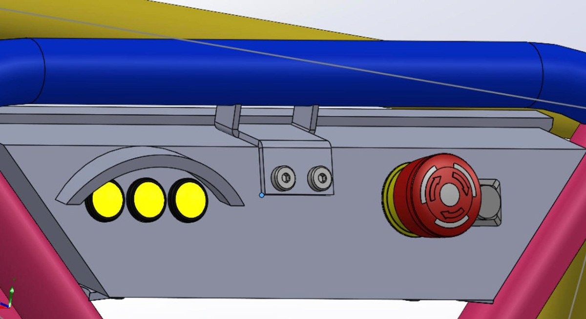
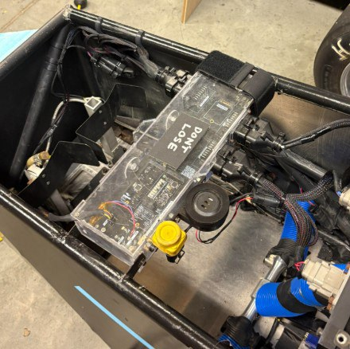
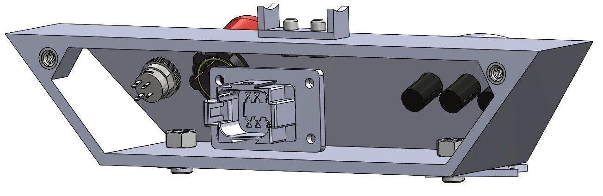
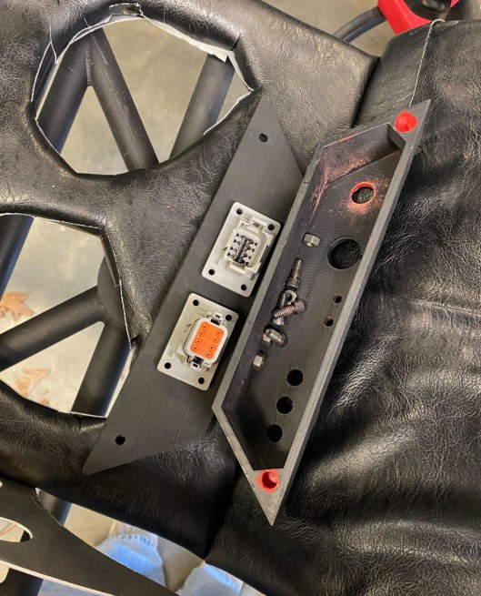
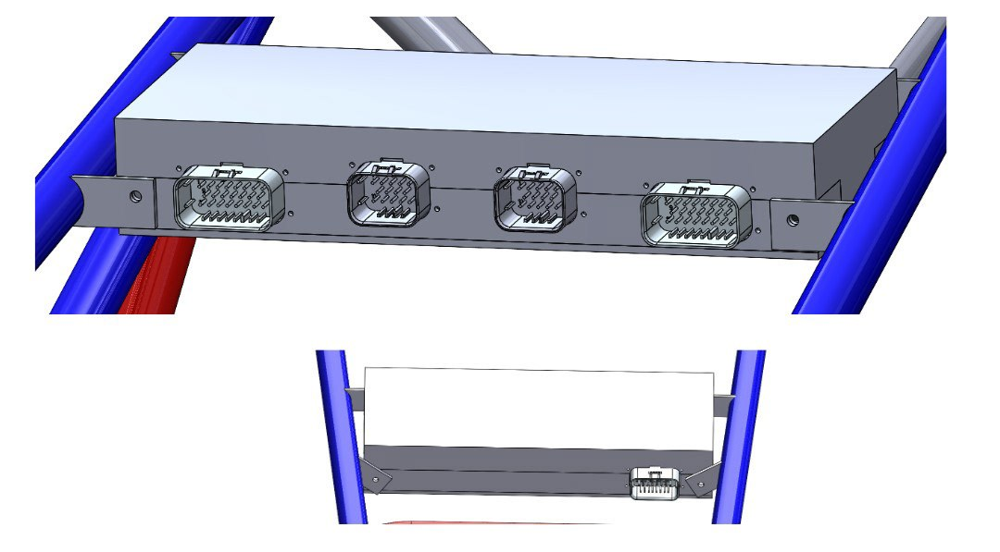
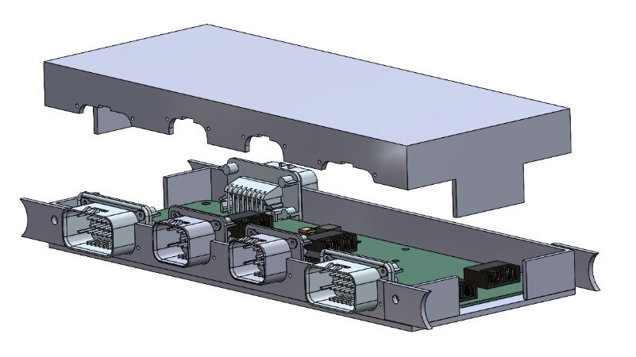

The challenge
The dashboard had to remain readable in direct sunlight and fit around the steering wheel and chassis. The electronics enclosure, nicknamed the “Nostril,” needed to package multiple control boards while keeping them accessible for maintenance and debugging.
My contribution
I led CAD design for the dashboard and enclosure, defined the mechanical interfaces and access strategy, incorporated feedback from electrical and chassis subteams, and prepared the designs for manufacturing and prototyping.
Dashboard
An angled front face and integrated sun guard reduced direct glare at the LED indicators. Design-review feedback led to more mounting points for stiffness, alongside packaging for emergency-stop and ready-to-drive controls.




Electronics enclosure
A slide-fit removable top and well-tab geometry made access possible without removing the entire enclosure. Connector placement allowed the connectors to come out with the top, while the internal layout accommodated the sensing controller, throttle, brakes, and Raspberry Pi with HAT.




Iteration & manufacturing
Across design reviews, I revised dimensions for connector requirements, added dashboard mounts, and adjusted the access strategy around maintenance feedback. The manufacturing plan combined laser-cut acrylic panels, 3D-printed features, and planned welded chassis mounts.